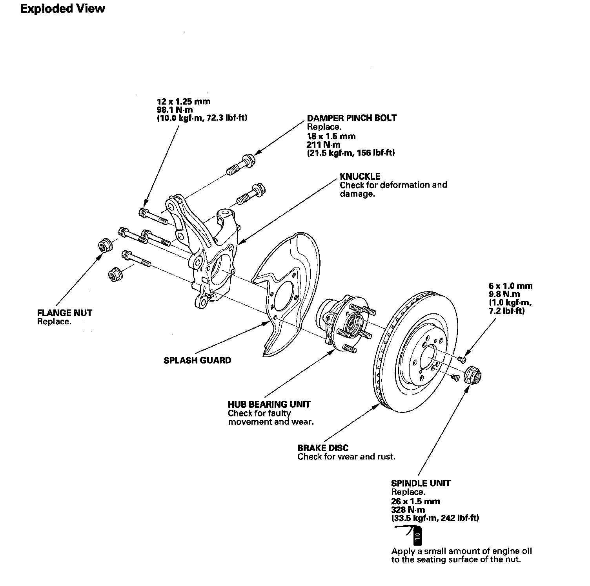
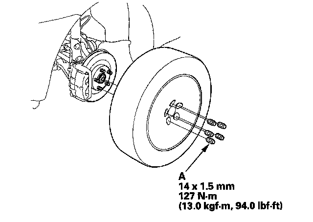
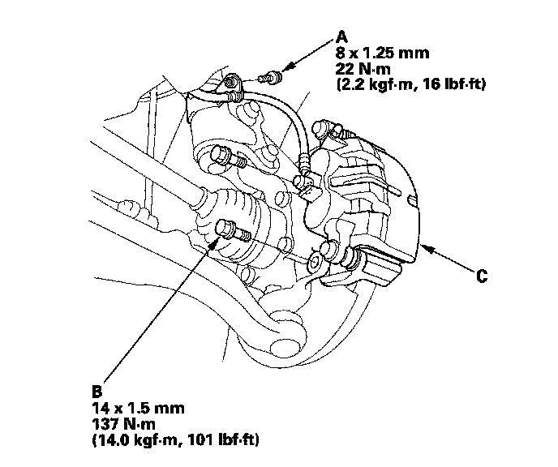
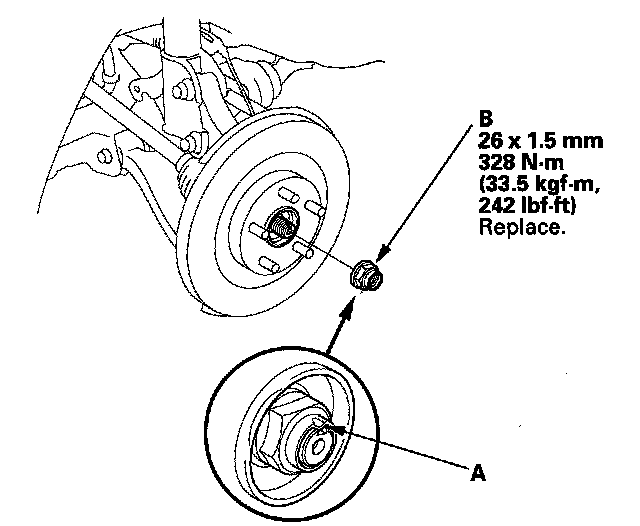
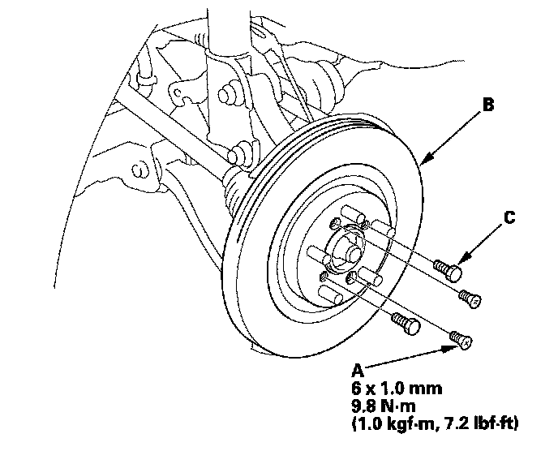
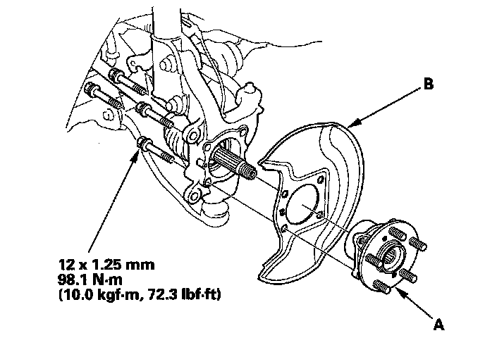
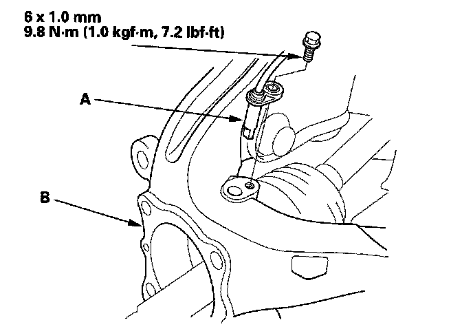
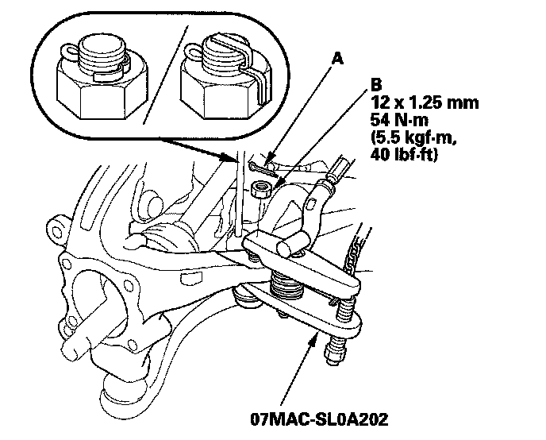
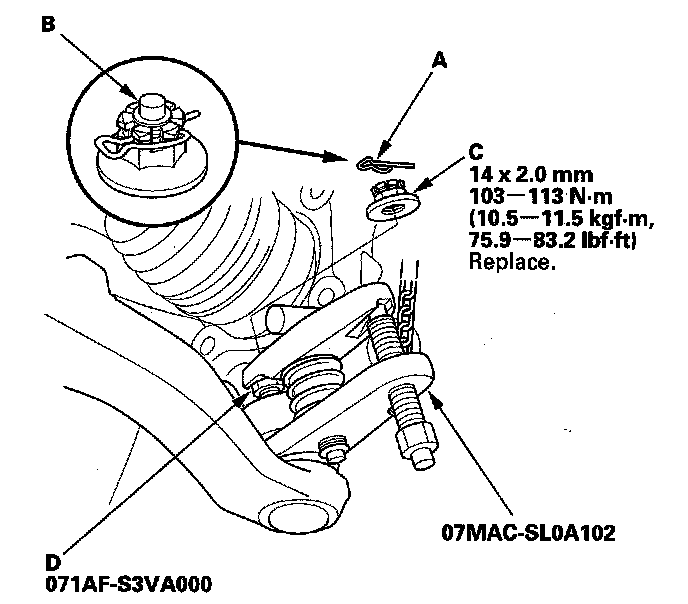
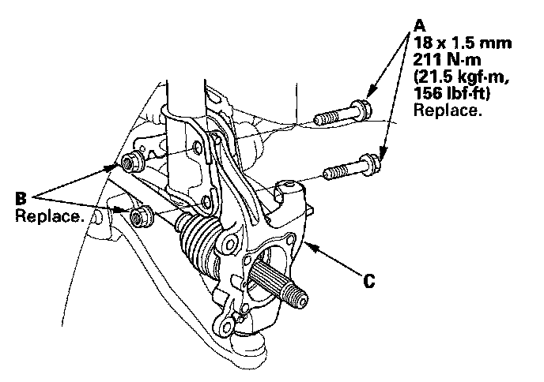

Front Steering Knuckle: Service and Repair
Knuckle/Hub Bearing Unit ReplacementKnuckle/Hub Bearing Unit:

Special Tools Required
^ Ball joint remover, 32 mm 07MAC-SL0A102
^ Ball joint remover, 28 mm 07MAC-SL0A202
Hub Bearing Unit Replacement
1. Raise the front of the vehicle, and support it with safety stands in the proper locations.
2. Remove the wheel nuts (A) and the front wheel.

3. Remove the brake hose (A).

4. Remove the brake caliper bracket mounting bolts (B) and remove the caliper assembly (C) from the knuckle. To prevent damage to the caliper assembly or brake hose, use a short piece of wire to hang the caliper assembly from the undercarriage. Do not twist the brake hose excessively.
5. Remove the stake (A) then remove the spindle nut (B).

6. Remove the flat screws (A).

7. Release the brake disc (B) from the hub.
NOTE: If the brake disc is stuck to the hub. Screw two 8 x 1.25 mm bolts (C) into the brake disc to push it away from the hub. Turn each bolt 90 degrees to prevent the brake disc from binding.
8. Remove the hub bearing unit (A) and the splash guard (B) from the knuckle.

9. Check the hub bearing unit for damage and cracks.
10. Install the hub bearing unit in the reverse order of removal, and note these items:
^ Tighten all mounting hardware to the specified torque values.
^ Use a new spindle nut, apply a small amount of engine oil to the seating surface of the nut. After tightening, use a drift to stake the spindle nut shoulder against the driveshaft.
^ Before installing the brake disc, clean the matching surfaces of the hub bearing unit and the inside of the brake disc.
^ Before installing the wheel, clean the mating surface of the brake disc and the inside of the wheel.
^ Check the wheel alignment, and adjust it if necessary.
Knuckle Replacement
1. Remove the hub bearing unit.
2. Remove the wheel sensor (A) from the knuckle (B). Do not disconnect the wheel sensor connector.

3. Remove the cotter pin (A) from the tie-rod ball joint, then remove the nut (B).
NOTE: During installation, install the new cotter pin after tightening the nut, and bend its end as shown.

4. Disconnect the tie-rod ball joint from the knuckle using the ball joint remover.
5. Remove the cotter pin (A) from the lower arm ball joint pin (B) then remove the nut (C).
NOTE: During installation, install the lock pin after tightening new castle nut.

6. Install the ball joint thread protector (D).
7. Disconnect the lower arm ball joint from the knuckle using the ball joint remover.
8. Remove the damper pinch bolts (A) and flange nuts (B) from the damper, then remove the knuckle (C).
NOTE: During installation, install new damper pinch bolts and new flange nuts.

9. Install the knuckle in the reverse order of removal, and note these items:
^ Be careful not to damage the ball joint boot when installing the knuckle.
^ Before connecting the lower ball joint to the knuckle, degrease the threaded section and tapered portion of the ball joint pin, the lower arm connecting hole, the threaded section and mating surface of the castle nut.
^ First install all the components and lightly tighten the bolts and nuts, then raise the suspension to load it with the vehicle's weight before fully tightening to the specified torque values.
^ Tighten all mounting hardware to the specified torque values.
^ Torque the castle nut to the lower torque specification, then tighten it only far enough to align the slot with the ball joint pin hole. Do not align the castle nut by loosening it.
^ Before installing the brake disc, clean the mating surface of the front hub and the inside of the brake disc.
^ Before installing the wheel, clean the mating surface of the brake disc and the inside of the wheel.
^ Check the wheel alignment, and adjust it if necessary.